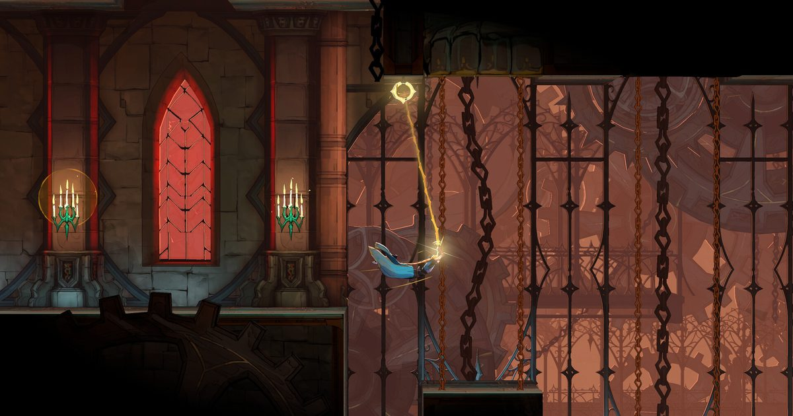

2026-10-15 · 新游深读
Konami 的《恶魔城：贝尔蒙特之咒》(Castlevania: Belmont's Curse) 今天 10 月 15 日登陆 PS5、Xbox Series X|S、Steam 与 Switch，29.99 美元。这是系列 18 年来第一部 2D 正统新作，开发方是做出《Dead Cells》的 Evil Empire 与 Motion Twin。真正值得写一篇的，不是"恶魔城回来了"这句欢呼，而是它用一副塔罗牌，解决了一个银河城游戏拖了二十多年没解决的结构问题。

时间设定在 1499 年的巴黎，正统续接《恶魔城传说》(Castlevania III: Dracula's Curse) 的二十三年后。城里烧着，怪物从阴影里爬出来，主教的一封信把特雷弗·贝尔蒙特请了过来。
主角不是特雷弗，是他女儿 罗丝·贝尔蒙特 (Rose Belmont)——母亲是西法·贝尔纳德斯。父女俩沿塞纳河进城，在码头立刻被冲散，罗丝独自从街道打到地下墓穴。她右臂上带着德古拉的诅咒：一道从肘部往手掌爬的红痕。
配音班底几乎整建制来自 Netflix 动画：Abby Trott 配罗丝，JB Blanc 配特雷弗，Alejandra Reynoso 与 Graham McTavish 分别回归西法与德古拉，Liam O'Brien 也回来演《无罪的叹息》里的艾萨克。系列名曲《血泪》(Bloody Tears) 有新编曲。
这里有个容易被一带而过的细节值得点出来：动画剧集改编的正是《恶魔城传说》，而这部游戏续的也是它。声优、美术都向动画靠拢，但时间线守的是游戏正史。这是 Konami 现在对恶魔城这套 IP 的标准打法——用动画拉新，用游戏守正，两边不共用一条时间线，但共用一张脸。
罗丝手上有副塔罗牌，是已故母亲西法留给她的。每张牌对应德古拉麾下的一名仆从，名字都是称号式的：堕落者 (The Fallen)、战士 (The Warrior)、建造者 (The Builder)。
打倒一名仆从，他的牌就会被收封成 Arcana，变成罗丝可用的法术或副武器。听上去像普通的能力解锁，但它真正特别的地方在于：同一张牌同时干着六件事。
这就是我们说的"接口层"。银河城这个类型从《月下夜想曲》到现在，一直有个没解决好的老毛病：能力获取和叙事推进是两条平行线。你拿到二段跳是因为地图开了，不是因为故事需要你跳；剧情要你去东边，但你正在西边刷一个跟剧情无关的宝箱。两条线各走各的，玩家脑子里要同时维护两套动机。
塔罗牌把两条线焊死了。你想变强 → 你去找牌 → 找牌要读线索 → 线索告诉你这人是谁、他为什么在这儿 → 你打倒他 → 他变成你的法术，还顺嘴跟你聊两句。一次动作，六个系统同时前进。这是近年银河城里最干净的一次结构设计，比单纯"多加几个能力"要高一个层级。
战斗层面有三处具体的东西值得单独讲。
第一，鞭子不只是武器，是位移。罗丝用的是圣鞭 Vampire Killer。打完第一个 Boss「堕落者」之后解锁的秘法鞭可以勾住场景里的抓点，而关键点是——它也能勾在敌人身上。这让"接近"这件事从消耗变成资源：你可以把自己拽向敌人，接一段连段，再撤。早期试玩普遍反映罗丝手感偏"重"，鞭子到手之后这个印象会被彻底推翻，这不是巧合，是刻意的教学顺序。
第二，慈悲善工 (Works of Mercy) 取代了支线任务。每个 Arcana 都挂着若干可选挑战，从"地图探索到某个百分比"这种宏观目标，到"用一次圣十字击杀多个敌人"这种精细操作。完成解锁的 Blessing 不是数值，是机制改写：多扔出一发圣十字、或者接住回旋的圣十字返还一部分法力值。这类升级会实打实改变打法，不是 +3% 攻击力。
第三，节奏是设计过的。前大约五小时是银河城玩家熟悉的"假非线性"——路看起来多，其实只有一条。五小时之后地图真正摊开，从巴黎街道切进城堡，多条线同时可追。这个从窄到宽的切换点卡得很准，既不至于开局让人迷路，也不会让人觉得从头到尾只有一条道。
Konami 找 Evil Empire 和 Motion Twin，是那种"看上去理所当然"的选择——《Dead Cells》是过去十年最成功的 2D 动作游戏之一。很多人因此默认成品会是个"肉鸽恶魔城"。
结果完全相反：纯银河城，固定地图，无永久死亡，29.99 美元买断，单人。
我们认为这是一次非常清醒的克制。Dead Cells 真正可迁移的资产不是"run 结构"，而是手感与敌人预兆 (telegraph) 的设计功力——出招前摇清不清楚、受击反馈脆不脆、连段窗口宽不宽。这些是团队肌肉记忆层面的东西，跟是不是肉鸽无关。Konami 买的正是这个。
反过来说，如果真做成肉鸽，它会同时失去两样东西：恶魔城"一片完整城堡等你拆解"的空间感，和这次结构设计的全部收益——塔罗牌的六重身份只有在固定地图上才成立，随机关卡会把线索系统直接冲垮。
定价也印证了这个定位。29.99 美元是中预算档，不是 3A 赌注；39.99 美元的 Midnight Edition 是唯一有实体的版本（PS5 光盘、Switch 卡带），预购送阿鲁卡多风格外观。10 月 1 日就上了免费 demo，进度可继承到正式版——这是一个很低的试错门槛。
其一，装备系统被"饰品化"了。传统的恶魔城 RPG 装备被换成了一套银河城通用品的 trinket 配置。你依然能凑出破坏平衡的搭配，但系列在玩法上的一部分辨识度确实丢掉了。这一条几乎是所有评测都提到的共同遗憾。
其二，同伴太爱剧透。那些被收封的仆从会不停地点破后续剧情走向，本该是"打破命运与诅咒"的悬疑感被提前泄了底。它想把 IGA 时代厚重的 Lore 写法和 NES 时代直来直去的叙事缝在一起，缝合处是看得见的。
其三，后期平台跳跃有难度尖刺。部分评测明确指出后段跳跃关卡对不熟悉系列精度要求的玩家不友好。另外 Switch 版锁 30 帧（Switch 2 通过兼容运行为 60 帧），PS5 / XSX / PC 目标 60 帧。
结构设计：9.2 / 10（塔罗 Arcana 的六合一接口，近年银河城最干净的一次系统创新）
战斗手感：8.6 / 10（鞭子即位移是神来之笔；但罗丝偏重的前置手感会劝退一部分人）
叙事执行：7.4 / 10（角色写得比历代贝尔蒙特都活，但同伴剧透与可预测性削弱了悬疑）
系列还原度：8.8 / 10（18 年空白后的正统回归，血泪新编、CV3 续接、动画声优整建制回归）
综合首发评分：8.6 / 10
几个可查的硬数据：Metacritic 86，OpenCritic 85；系列 40 周年；距上一部 2D 正统新作 18 年，距上一部登陆 PC 的新作（2014 年《暗影之王 2》）12 年；标准版 29.99 美元、Midnight 版 39.99 美元；免费 demo 自 10 月 1 日起可在 PS5 / Switch / XSX / Steam 上游玩且进度继承；官方性能目标 PS5 / XSX / PC 为 60 帧，Switch 为 30 帧。
主流评测给它的形容词里出现频率最高的是 "safe"（保守）。这个评价我们不反对，但要补一句：在一个 18 年没出过 2D 正统续作、过去十年只能靠移植和合集维持存在感的 IP 上，"保守"本身就是正确的产品决策。Konami 需要的不是一场冒险，是一次能把地基重新夯实、让续作有得可做的成功。塔罗牌这个设计已经足够新，不需要再在结构上叠一层风险。
换句话说：它的保守是叙事和框架层面的保守，不是系统层面的保守。这两件事经常被混为一谈。
| 作品 | 能力获取 | 与叙事的关系 |
|---|---|---|
| 月下夜想曲 | 地图探索掉落 | 基本无关，两套动机 |
| 空洞骑士 | Boss / 区域解锁 | 叙事刻意留白，靠环境补 |
| Dead Cells | 局内随机蓝图 | 不承载叙事 |
| 贝尔蒙特之咒 | 塔罗线索 → 追踪 → 收封 | 同一对象同时是线索、文本、Boss 与法术 |
这张表里最该注意的对比是《Dead Cells》那一行——同一个开发团队，在自家 IP 里完全不碰叙事，在恶魔城里却把能力系统做成了叙事载体。这恰恰说明 Konami 给他们的任务书是明确的：把动作性带过来，别把结构带过来。
如果还在犹豫，用现成的免费 demo 跑一遍，重点观察三件事——
三条里有两条成立，29.99 美元这个价位没什么可犹豫的。
《恶魔城：贝尔蒙特之咒》不是要改写行业的作品。它做的事很朴素：在 40 周年这个节点，把一个 18 年没动过的 2D 系列重新跑通一遍，并且顺便解决了一个同行们拖了很久的结构问题。
塔罗 Arcana 那一层接口设计，是它真正留给行业的增量；保守的叙事和丢失的装备系统，是它为了"跑通"付出的代价。这笔账，从 MC 86 分的结果看，是值得的。至于罗丝·贝尔蒙特这个角色能不能撑起下一代——那要看 Konami 有没有胆子接着往下走了。